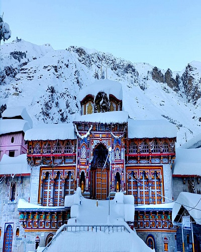
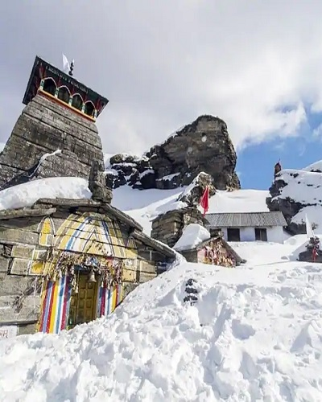
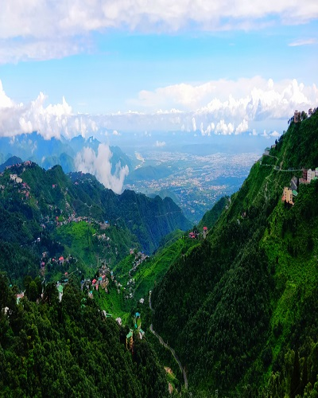
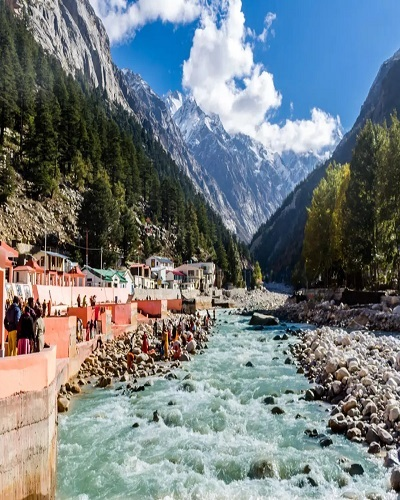
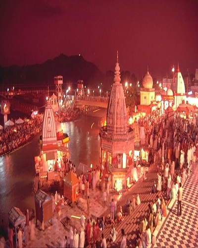
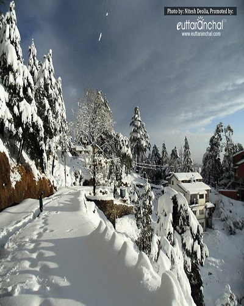
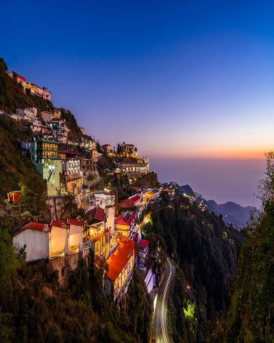
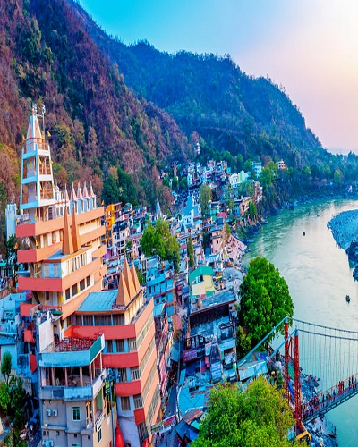
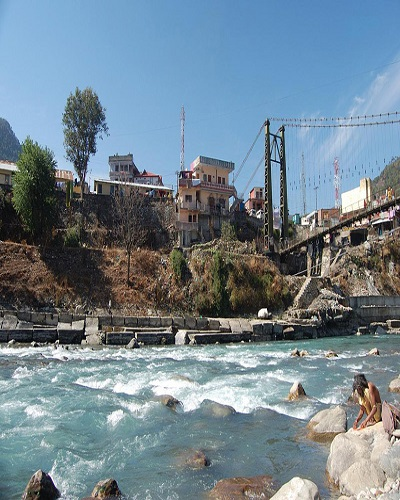

The primary attraction for tourists in the place is snow skiing and the best time for it is from November to March. The months from May to November offer a cool and pleasant climate to the tourists.Read More
Auli

Badrinath
The ideal time to visit the temple is from May to June and September to October. It is highly recommendable to avoid late winters and monsoon seasons.Read More
Badrinath

Chopta
The most ideal time for visiting Chopta Tungnath trek is the summer months of April, May, and June.Read More
Chopta

Dehradun
The months from March-June are considered as the best season to visit Dehradun because of the extremely pleasant and charming weather.Read More
Dehradun

Gangotri
Gangotri remains cold almost round the year, yet the best time to visit this place is in between April and June, and September and October.Read More
Gangotri

Haridwar
The best time to visit Haridwar is between November and March as the weather is cool and pleasant when you are out exploring the place.Read More
Haridwar
Jim Corbett National Park
If you are planning a thrilling vacation in the realm of nature, the best time to visit Jim Corbett National Park is from the month of November to February. Read More
Winter is the Best Season to visit Lansdowne.Read More
Lansdowne

Mukteshwar
Weather in Mukteshwar remains pleasant all through the year, so the best time to visit Mukteshwar is any time of the year.Read More
Mukteshwar

Mussoorie
March till June are the best months to visit Mussoorie for a pleasant sightseeing tour and to enjoy the spring and flower bloom and cool summers. Read More
Mussoorie
Nainital
The best time to visit Nainital is from March to June which is the summer/spring season.Read More
Nainital

Rishikesh
Best time to visit Rishikesh is from February to mid-May, though the picturesque destination can be toured on any date of the calendar.Read More
Rishikesh

Uttarkashi
March to November is the best time to visit Uttarkashi.Read More
Uttarkashi
Valley of flowers
The valley is accessible only between the months of June and October and the best time to visit the Valley of Flowers in Uttarakhand is between July and mid-August when it is in full bloom.Read More